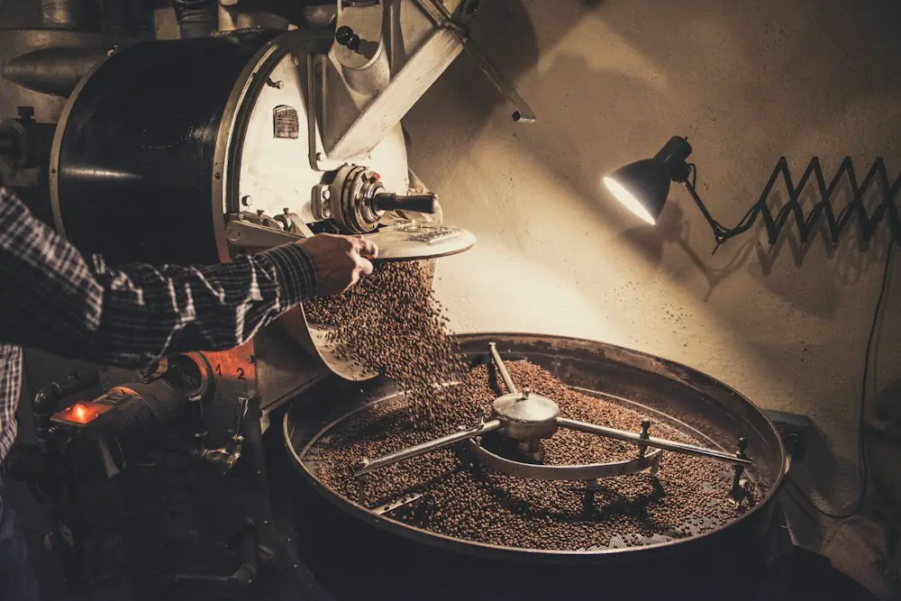

エチオピア ウォッシュト
浅煎り（1/5）
柑橘や紅茶のような香り。冷めてから甘さが出ます。
100g 880円 ／ 200g 1,680円
店に並んでいる豆の一部です。どれも店内で一杯から試せます。豆の量り売りは100gから。
浅煎り（1/5）
柑橘や紅茶のような香り。冷めてから甘さが出ます。
100g 880円 ／ 200g 1,680円
中煎り（3/5）
ミルクチョコのような甘さと、やわらかな酸味。
100g 780円 ／ 200g 1,480円
深煎り（5/5）
苦みとコクが中心。ミルクや焼き菓子とよく合います。
100g 720円 ／ 200g 1,380円
同じ豆でも、焼く時間で味が変わります。迷ったら「いつも飲んでいる味」を教えてください。近い焙煎度からご案内します。

カウンター8席とテーブル4席の小さな店です。店主がひとりで焙煎と抽出を担当し、豆の状態に合わせて挽き目とお湯の温度を毎朝調整しています。
豆を買って帰る方のために、家での淹れ方のメモを豆の袋に入れています。「家だと味が違う」というご相談も、遠慮なくどうぞ。
焙煎日（火・金）に焼いた豆を、その日のうちに発送します。お店で受け取る「取り置き」も、前日までのご連絡で承ります。